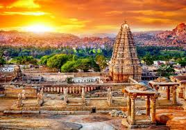
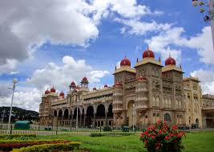
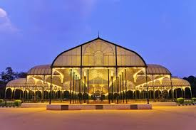
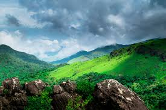
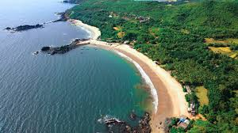

Hampi

A UNESCO World Heritage Site featuring the stunning ruins of the Vijayanagara Empire, including magnificent temples, rock-cut sculptures, and monuments scattered across a bizarre boulder-strewn landscape.
Mysore

Known as the 'City of Palaces', its main attraction is the magnificent Mysore Palace (Amba Vilas), a blend of Hindu
Bangalore

The state capital, known as the 'Silicon Valley of India', offering a cosmopolitan vibe, gardens like Lal Bagh, and historical sites such as the Bangalore Palace.
Coorg

A picturesque hill station famous for its coffee plantations, lush green hills, waterfalls, and a strong local Kodava culture, often called the 'Scotland of India'.
Gokarna

A temple town and a popular destination for beach lovers, offering serene and pristine beaches like Om Beach, Kudle Beach, and Gokarna Beach, known for its laid-back atmosphere.